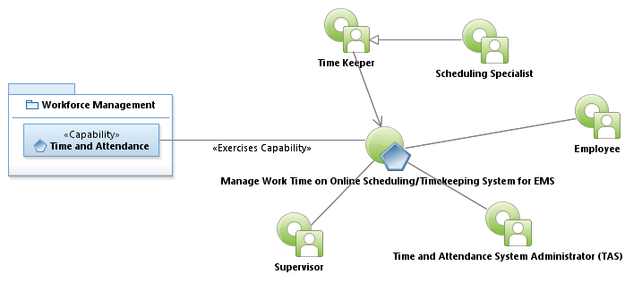
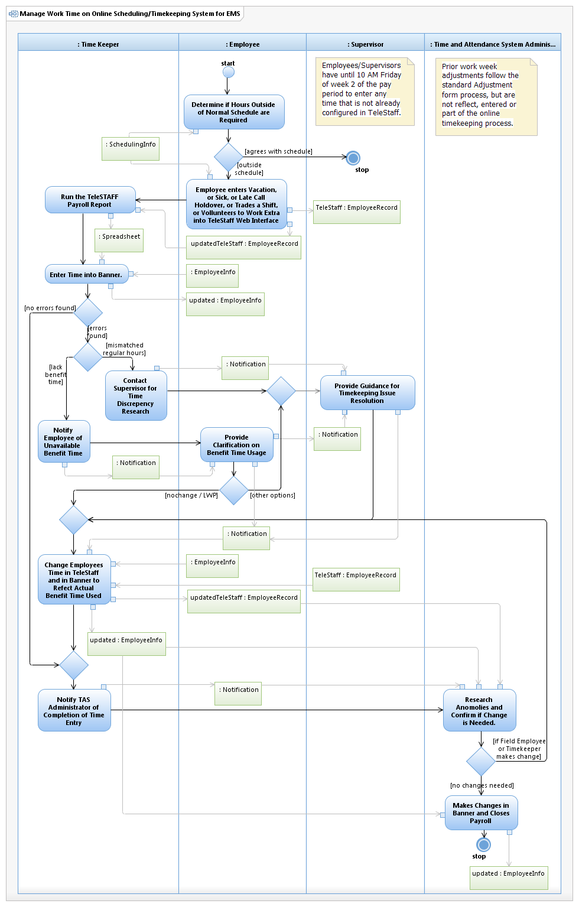

Use Case Model: Maintain Work Time on Online/Timekeeping System for EMS
Architect: Aaron Brown, IT Enterprise Architect Senior
Date Last Modified:03/05/2013
User Review: Paul Hafner, Kurt Lapham
Date: 03/05/2013
Scheduling enters a schedule for a 6 month period. The Employee enters exceptions to this plan on a weekly basis Online (currently using TeleStaff.) The System will generate the pay period information to ultimately be put into BANNER. This is only for Field employees of EMS only.
Follow link to Role Definitions

Use Case Model: Maintain Work Time on Online/Timekeeping System for EMS

Activity Model: Maintain Work Time on Online/Timekeeping System for EMS